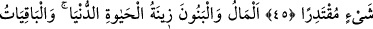

RABBİN HUZURUNA ÇIKARILIŞ
45. Onlara dünya hayatını da misal göster: O, gökten indirdiğimiz bir su gibidir
ki, bu su sayesinde yeryüzünün bitkisi (önce gelişip) birbirine karışmış; arkasından
rüzgârın savurduğu çerçöp hâline gelmiştir. Allah, her şeye kadirdir.
46. Servet ve oğullar, dünya hayatının süsüdür; ölümsüz olan iyi işler ise
Rabbinin nezdinde hem sevapça daha hayırlı, hem de ümit bağlamaya daha lâyıktır.
47. (Düşün) o günü ki, dağları yürütürüz ve yeryüzünün çırılçıplak olduğunu
görürsün. Hiçbirini bırakmaksızın onları (tüm ölüleri) mahşerde toplamış olacağız.
48. Ve hepsi sıra sıra Rabbinin huzuruna çıkarılmışlardır: Andolsun ki sizi ilk
defasında yarattığımız şekilde bize geldiniz. Oysa size vaad edilenlerin tahakkuk
edeceği bir zaman tayin etmediğimizi sanmıştınız, değil mi?
49. Kitap ortaya konmuştur: Suçluların, onda yazılı olanlardan korkmuş
olduklarını görürsün. “Vay hâlimize, bu nasıl kitapmış! Küçük büyük hiçbir şey
bırakmaksızın (yaptıklarımızın) hepsini sayıp dökmüş!” derler. BöyIece yaptıklarını
karşılarında bulmuşlardır. Senin Rabbin hiç kimseye zulmetmez.
“Onlara dünya hayatını da misal göster:” Yâni, kavmine dünya hayatının
güzelliğinin, parlaklığının ve çabucak yok olmasının neye benzediğini zikret ve açıkla ki
oyunuyla tatmin olmasınlar, ona bağlanmasınlar ve âhiretten de tamamen yüz
çevirmesinler. “O, gökten” buluttan ya da semâ tarafından “indirdiğimiz bir su
gibidir.” Maksad dünyanın hâlini sadece suya değil, benzetme edâtının peşindekilerin